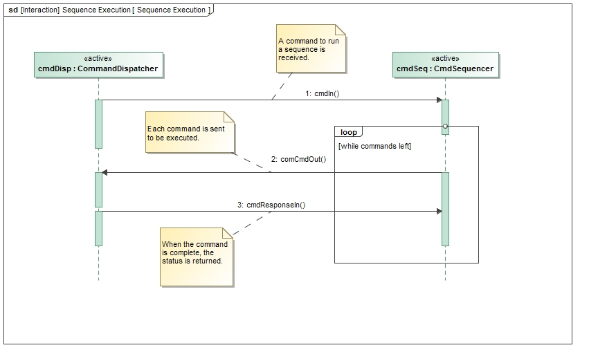

|
F´ Flight Software - C/C++ Documentation
Latest
A framework for building embedded system applications to NASA flight quality standards.
|
|
F´ Flight Software - C/C++ Documentation
Latest
A framework for building embedded system applications to NASA flight quality standards.
|
The command sequencer is a component that iterates through a set of commands contained in binary form in a file located in a file system available to the sequencer. A command to the sequencer specifies the file to execute. The file can contain commands that execute immediately, after a delay, or at an absolute time. The sequence will abort if any given command in the sequence returns a failed status.
The requirements for Svc::CmdSequencer are as follows:
| Requirement | Description | Verification Method | Rationale |
|---|---|---|---|
| ISF-CMDS-001 | The Svc::CmdSequencer component shall read sequence files. | Unit Test | CmdSequencer gets commands from the sequence file. |
| ISF-CMDS-002 | The Svc::CmdSequencer component shall validate the sequence files with a CRC. | Unit Test | CmdSequencer need to know it has a valid file. |
| ISF-CMDS-003 | The Svc::CmdSequencer component shall provide a command to validate the sequence file. | Unit Test | Waiting to validate the file only when running it can cause operational issues |
| ISF-CMDS-004 | The Svc::CmdSequencer component shall cancel the sequence upon receiving a failed command status. | Unit Test | A sequence should not continue if a command fails since subsequent commands may depend on the outcome |
| ISF-CMDS-005 | The Svc::CmdSequencer component shall provide a command to cancel the existing sequence | Unit Test | Operator should be able to cancel the sequence if it is hung or needs to be stopped. |
| ISF-CMDS-006 | The Svc::CmdSequencer component shall provide an overall sequence timeout. | Unit Test | Sequencer should quit if a component fails to send a command response |


| Port Name | Type | Direction | Usage |
|---|---|---|---|
| cmdRegOut | Fw::CmdReg | output | Framework command registration |
| cmdIn | Fw::Cmd | input | Framework command input port |
| cmdResponseOut | Fw::CmdResponse | output | Framework command status port |
| logOut | Fw::Log | output | Framework binary log output port |
| LogText | Fw::LogText | output | Framework text log output port |
| tlmOut | Fw::Tlm | output | Framework telemetry port |
| timeCaller | Fw::Time | output | Framework time port |
| pingIn | Svc::Ping | async input | Input ping call |
| pingOut | Svc::Ping | output | Reply for ping |
| schedIn | Svc::Sched | async input | Scheduler input - timed commands will be checked |
| comCmdOut | Fw::Com | output | Sends command buffers for each command in sequence |
| cmdResponseIn | Fw::CmdResponse | async input | Received status of last dispatched command |
| seqRunIn | Svc::CmdSeqIn | async input | Receives requests for running sequences from other components |
| seqDone | Fw::CmdResponse | output | outputs status of sequence run; meant to be used with seqRunIn |
The CS_Validate command will validate that the format and checksum of a sequence file are correct without executing any commands in the file. This allows operators to validate a file prior to executing it.
The CS_Run command will execute a sequence. If a prior sequence is still running, it will be canceled. If a command returns a failed status, the sequence will be aborted.
The CS_Cancel command will cancel an existing sequence. If there is no sequence currently executing, the command will emit a warning event but not fail.
The CS_Manual command will put the sequencer in a manual stepping mode, where the commands will be advanced by the CS_Step command. After entering this mode, the operator should issue a CS_Run command to load the sequence. In this mode, the sequence will be validated and loaded, but will not execute any commands until receiving the CS_Start command
The CS_Start command will execute the first command in the sequence in manual mode.
The CS_Step command will execute subsequent commands after receiving the CS_Start command.
The CS_Auto command will change the sequencing mode from manual to automatic, which means that the sequencer will automatically execute commands upon loading. This command can only be run when there are no currently executing sequences. If a sequence is executing, a CS_Cancel followed by a CS_Auto will get the sequencer back to executing sequences automatically.
The schedIn port checks to see if there is a timed command pending. If the timer for a pending command has expired, the command is dispatched. If there is a command being executed, the command timeout timer is also checked. If it has expired, a warning event is emitted and the sequence is aborted.
The cmdResponseIn port is called when a command in a sequence is completed. If the command status is successful, the next command in the sequence is executed.
This port takes a single argument filename of type Fw::String. In general, sending filename on this port has the same effect as issuing a CS_Run command with filename as the file name argument.
If filename is empty, then CmdSequencer runs the sequence stored in the sequence buffer, without loading a sequence first. In order for this to work:
loadSequence.loadSequence must have succeeded.loadSequence, since these operations clear the buffer.The pingIn port is called by the Svc::Health component to verify that the CmdSequencer thread is still functional. The handler simply takes the provided code and calls the pingOut port.
The CmdSequencer class defines the following types:
Sequence: An abstract class representing a command sequence. It provides the following pure virtual functions, which its concrete subclasses must implement: * `loadFile`: Open a named sequence file from the disk andvalidate the file. Fill in the member variable
m_header of type Sequence::Header with the header information for the current sequence. * `hasMoreRecords:` Return true if and only if there are more recordsavailable in the current sequence.
* `nextRecord`: Return a [`Sequence::Record`](#Sequence_Record)object corresponding to the next record of the current sequence. This function should succeed if
hasMoreRecords returns true; otherwise it should assert. * `reset`: Reset the current sequence to the beginning.After calling this function,
hasMoreRecords should return true, unless the sequence has zero records. * `clear`: Clear the current sequence.After calling this function,
hasMoreRecords should return false.Sequence::Header: A class representing a sequence header. It contains member variables corresponding to the header fields of the F Prime sequence format.Sequence::Record: A class representing a sequence record. It contains member variables corresponding to the record fields of the F Prime sequence format.FPrimeSequence: A concrete subclass of Sequence that implements the virtual functions as follows: * `loadFile`: Open a named sequence file from the disk.Read, deserialize, and store the header. Read the binary records into a serial buffer B. Extract the stored CRC from the file. Check that the file format is valid according to the binary format specified in F Prime Sequence Format. Compute the CRC value of the binary header and records and check it against the stored CRC value.
* `hasMoreRecords`: Return `true` if and only if *B* has more data. * `nextRecord`: Deserialize and return the next record storedin the serial buffer.
* `reset`: Reset *B* for deserialization. * `clear`: Reset *B* for serialization.
The setTimeout() public method sets the command timeout value. When a command is being executed by a component, this value specifies a timeout in seconds that will abort the sequence if exceeded. The default value of zero means that there will be no timeout.
This function has a single argument of type CmdSequencer::Sequence&. By default, CmdSequencer uses an instance of FPrimeSequence to load and run binary sequences conforming to the specification given in F Prime Sequence Format. After you call setSequenceFormat, CmdSequencer uses the object passed in as its argument to load and run sequences. By defining a suitable subclass of CmdSequencer::Sequence& and passing in an instance of this subclass, you can use a project-specific sequence format. You can also change the internal representation for the sequence: for example, you can have the Sequence subclass read the next record from the disk instead of loading the entire sequence into memory (in this case, the loadFile operation would load just the fixed-length header).
The allocateBuffer() public method passes a memory allocator to provide memory for the sequence buffer needed by cmdSequencer. The user will provide an instance of a sub-class of Fw::MemAllocator that implements memory allocation. An example of this using the heap can be found in Fw/Types/MallocAllocator.hpp.
This function takes a single argument fileName of type Fw::String. When you call this function, CmdSequencer loads the sequence file fileName into its buffer so that you can execute it later by calling seqRunIn.
This function issues events, so you must connect the event topology before calling this function.
The deallocateBuffer() method is used to deallocate the buffer supplied in allocateBuffer() method. It should be called before the destructor.
An F Prime sequence file consists of a header followed by a list of records and a CRC value.
Header: The format for the header is as follows. All numbers must be stored in big-endian format.
| Header Field | Size (bytes) | Description |
|---|---|---|
| File Size | 4 | Size of command record buffer following header |
| Number of records | 4 | Number of records in the file |
| Time Base | 2 | Time Base for sequence (0xFFFF = don't care) |
| Context | 1 | Context for sequence (project specific) 0xFF = don't care |
Records: The format for each record is as follows:
| Record Field | Size (bytes) | Description |
|---|---|---|
| Descriptor | 1 | What kind of record it is. 0 = absolute time command, 1 = relative time command, 2 = end of sequence |
| Command Time | 8 | Start time of command. Depending on descriptor, will be relative or absolute. First four bytes are seconds of command, second four bytes are microseconds of command. |
| Record Size | 4 | Size of command buffer |
| Command Buffer | >= 4 | Buffer containing command packet descriptor, command opcode, and zero or more serialized arguments. |
CRC value: The last 4 bytes of the file is a CRC of the entire file as computed by Utils/Hash.hpp
A utility is provided that will convert a text file listing of commands and their argument to a binary sequence file.
It can be run by invoking:
Gse/bin/run_tinyseqgen.sh <input text file>
The syntax of the file is as follows:
; - Comment Character. Any text after this will be ignored. Can be anywhere on a line.
Relative Time Command:
RHH:MM::SS.FFFF MNEMONIC A1,A2...AN
where:
R - Relative time descriptor
HH - delay in hours
MM - delay in minutes
SS - delay in seconds
.FFFF - delay in fractions of a second (optional)
MNEMONIC - Command mnemonic in dictionary
A1,A2...AN - any arguments for the command
Immediate Command:
A no delay command is a special case of a relative delay with zero delay specified:
R00:00:00 MNEMONIC A1,A2...AN
Absolute Command:
AYYYY-DOYTHH:MM:SS.FFFF MNEMONIC A1,A2...AN
where:
R - Relative time descriptor
YYYY - Year
DOY - Day of Year
HH - delay in hours
MM - delay in minutes
SS - delay in seconds
.FFFF - delay in fractions of a second (optional)
MNEMONIC - Command mnemonic in dictionary
A1,A2...AN - any arguments for the command
Note that the time is encoded in UTC with an epoch of 1/1/1970.
An example can be seen in Gse/bin/simple_sequence.seq
The CmdSequencer does not have any significant state machines.
TBD

To see unit test coverage run fprime-util check –coverage
| Date | Change Description |
|---|---|
| 2/26/2017 | Version for Design/Code Review |
| 4/6/2017 | Version for Unit test |
| 10/30/2017 | Revise design to make sequence format configurable |